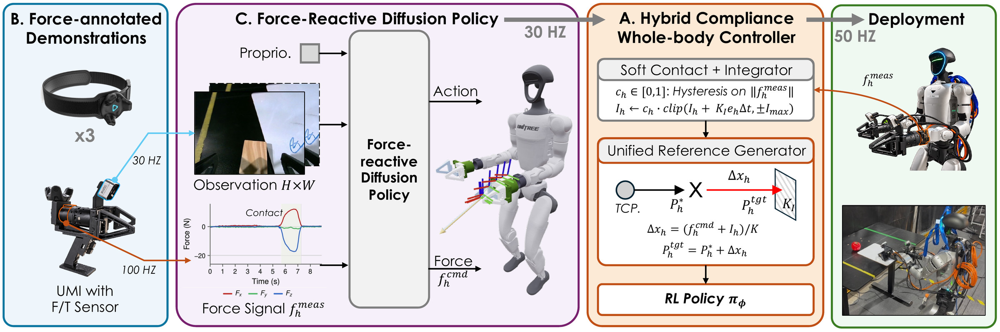

Abstract
Many everyday tasks require controlling contact force as well as motion. On a humanoid, this force must often be coordinated across both hands and the whole body, and cannot be specified by kinematic trajectories alone. We present FLoRe, a framework for learning force-reactive humanoid loco-manipulation from robot-free demonstrations. A UMI-style handheld interface records hand and torso motion together with the contact wrench applied by the operator. A diffusion policy observes vision, robot state, and measured wrenches, then predicts keypoint motion and per-hand force commands. A unified force–position whole-body controller executes these commands while maintaining balance, with real force/torque (F/T) feedback in the loop. In simulation, the controller realises commanded forces with a gain of about 1.05 and an in-contact error of about 1 N per hand while tracking whole-body motion. Across three contact-rich tasks on the robot, the force-reactive policy succeeds in 80% of rollouts, compared with 26.7% for a position-only policy trained on the same demonstrations and executed by the same controller. Both force commands and force observations contribute to this improvement.
Pipeline


Unified Force–Position Low-Level Controller
One learned policy tracks the five keypoints – both hands, the torso and both feet – and the commanded force of each hand.
Try it below: the controller runs in your browser, with MuJoCo and the policy compiled to WebAssembly as in the code release, and each hand meets the same compliant wall and simulated F/T sensor as in training.
- Command a force Set Fcmd (purple) for a hand with the left sliders, up to 25 N; Fmeas (cyan) follows.
- Push the robot Drag it with the mouse, or add Fext with the lower sliders: it keeps its balance.
- Look around Drag to orbit, scroll to zoom, and switch the motion at the top right. R resets.
Real-world Experiments
Three contact-rich tasks on a Unitree G1. Across them, the force-reactive policy succeeds in 80% of rollouts, against 26.7% for a position-only policy trained on the same demonstrations and executed by the same controller.
Wipe Board
The robot presses an eraser against a whiteboard and wipes a marked strip. Success depends on the normal force, which the images do not show.


FxFyFz Solid: measured forceDashed: predicted force
Baseline failure
Without a force command, the position-only baseline brings the eraser to the board but does not press it on: the eraser hovers over the mark and leaves it.
Rotate Box
The robot pinches the rim of a crate with both hands, rotates it by about 50°, drags it about 0.5 m across the table and releases it. The hands share an internal force: if one leads the other, the crate tips.


FxFyFz Solid: measured forceDashed: predicted force
Baseline failure
Without a force command, the position-only baseline puts both hands on the rim but does not squeeze it, and the heavy crate does not turn.
Push Gantry
The robot places both hands on a heavy wheeled frame and walks it forward. The legs and torso produce the push while the arms keep both hands on the frame: too little force does not move it, too much makes the hands slip or the robot lose balance.

FxFyFz Solid: measured forceDashed: predicted force
Baseline failure
Without a force command, the position-only baseline reaches the demonstrated pose, but the frame does not move and the policy has no way to push harder; in the end the robot loses its balance.
Robot-free Force-annotated Data Collection System

A Rotate Box demonstration: the two grippers pinch the crate’s rim, turn it and drag it across the table.